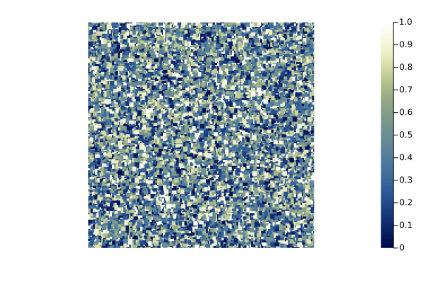
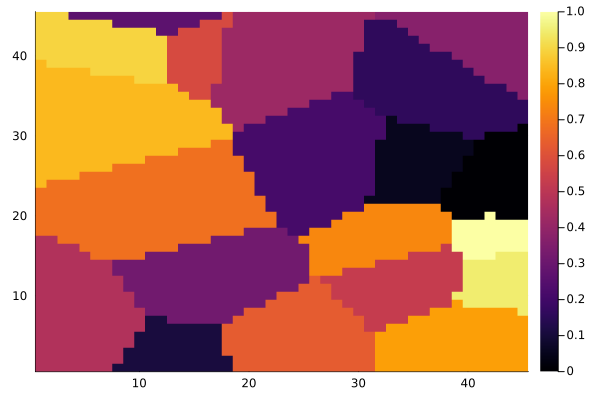

using NeutralLandscapes
using Plots
function demolandscape(alg::T) where {T <: NeutralLandscapeMaker}
heatmap(rand(alg, (200, 200)), frame=:none, aspectratio=1, c=:davos)
end
demolandscape (generic function with 1 method)
demolandscape(NoGradient())
demolandscape(PlanarGradient(35))
demolandscape(EdgeGradient(186))
demolandscape(WaveSurface(35, 3))
demolandscape(RectangularCluster())
sources = unique(rand(1:40000, 50))
demolandscape(DistanceGradient(sources))
heatmap(rand(NearestNeighborElement(20, 1), (45, 45)))
demolandscape(DiscreteVoronoi(40))
demolandscape(PerlinNoise())
sources = unique(rand(1:40000, 50))
heatmap(NeutralLandscapes.classify!(rand(DistanceGradient(sources), (200, 200)), [0.5, 1, 1, 0.5]))
demolandscape(DiamondSquare())
demolandscape(MidpointDisplacement())